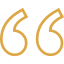

CHEGA DE SOFRER COM PROBLEMAS NO SEU CABELO!
O Shampoo CABELO DE SEDA foi idealizado e projetado com ingredientes que formam uma forte simbiose de compostos orgânicos que promovem a nutrição, hidratação e reconstrução da fibra capilar. Não importa se o seu cabelo é seco e muito danificado, ele vai ficar lindo e mais brilhante após você experientar este produto!

TRATAMENTO ESPECIALIZADO
Agora é possível realizar um tratamento de reconstrução capilar sem a necessidade de gastar rios de dinheiro ou se arriscar em diferentes salões de beleza que você mal conhece. Apenas este shampoo já auxiliará na melhora dos seus fios!

OPORTUNIDADE ÚNICA
O Shampoo CABELO DE SEDA é fabricado e produzido exclusivamente por nós. Você não conseguirá encontrar este produto em qualquer prateleira ou comércio que visitar. Por isso, é tão importante que você aproveite esta chance de adquirir o seu através deste site.
COMPRA SEGURA
Sua compra neste site está 100% segura, pois usamos protocolos de segurança que garantem total confiabilidade, sigilo e confidencialidade dos seus dados. Nosso certificado SSL garante que não haja qualquer tipo de abertura para a invasão de intrusos, ou seja, seus dados estão sempre protegidos comprando conosco!
FUNCIONA MESMO?
Confira alguns depoimentos de quem já usou:
Esse shampoo é coisa de Deus! Nunca achei que poderia ter meu cabelo tão brilhante como está e olha que eu já tentei vários tratamentos diferentes, mas desta vez deu certo! Mt mt mt mt obrigada!!!
Juliana Lima - Cascais
Gente, não tem como não vir até aqui para agradecer por tudo o que está acontecendo com o meu cabelo. Era meu sonho poder ter um cabelo bonito e eu já estava quase desistindo. Gratidão
Mariana Gomes - Santarém
Muito obrigada por este produto maravilhoso. Meu cabelo está muito mais saudável e eu me sinto muito melhor comigo mesma depois que comecei a usar.
Hélvia Lima - Alcabideche